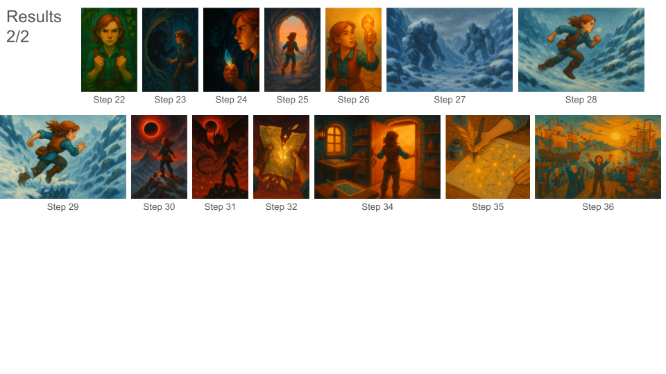

How do you create consistent stories in images with GPT4o?
GPT4o can now generate pretty good images when given proper instructions.
However, it’s still hard to get consistent images between successive generations.
If you need continuity between different images, either in the same chat, or in different windows, here’s a tutorial to get good consistency across different runs.
1. Storyboard generation
For this quick experiment, I’m going to directly ask ChatGPT to create a story.
Several “frameworks” can be used to generate stories (“The Hero With a Thousand Faces”, from Joseph Campbell, “Save the Cat” from Snyder, “The Shape of Stories” from Kurt Vonnegut, etc…).
Here’s the prompt (I used “o4-mini-high” here):
Here’s a partial screenshot of the answer:
Full result:
| Scene | Stage | Visual Description | Key Action / Conflict | Dialogue / Caption |
|---|---|---|---|---|
| 1 | Ordinary World | A dusty workshop lit by lanterns. Shelves of half-drawn maps. | Mira, a young cartographer’s apprentice, traces a faded star map. | Caption: “Every day, I chart lands I’ll never see…” |
| 2 | Call to Adventure | A wizened traveler bursts in, clutching a glowing compass shard. | He begs Mira: “Only you can restore the Celestial Compass!” | Traveler: “Without it, the world will fall to darkness.” |
| 3 | Refusal | Mira recoils, sketchbook trembling in her hands. | Fear grips her: she’s never left the safety of the workshop. | Mira (thought): “I’m no hero—I’m just an apprentice.” |
| 4 | Meeting the Mentor | By moonlight beneath a grand world map, the Traveler teaches Mira basic rites. | He reveals ancient lore: compass shards are scattered across three realms. | Traveler: “Your maps will guide you where magic won’t.” |
| 5 | Crossing the Threshold | Mira steps through an archway of swirling starlight into a barren desert plain. | The boundary shakes; her mentor’s voice echoes: “Trust your hand.” | Caption: “And so my map became my sword…” |
| 6 | Tests, Allies, Enemies | Montage of three trials: defeating sand wraiths, befriending a desert fox, solving a living labyrinth of rock. | Mira learns to read the desert’s hidden signs. | Fox (gesture): Points to a glowing waypoint on her map. |
| 7 | Approach to the Inmost Cave | Night-soaked forest. A massive, gnarled tree pulses with dark energy. | Mira confronts her doubt as the forest whispers her failures. | Caption: “Every step forward echoed my worst fears…” |
| 8 | Ordeal | Inside the tree’s hollow, a shadow-twin of Mira emerges, mirror-staring her. | She must overcome self-doubt to claim the second compass shard. | Shadow-Mira: “You’re not worthy.” |
| 9 | Reward (Seizing the Sword) | The shadow dissolves; Mira holds the glowing shard aloft, light spilling outward. | Confidence blooms—she’s no longer the timid apprentice. | Caption: “Light follows those brave enough to stand.” |
| 10 | The Road Back | Snowy mountain pass. Ancient golems awaken, chasing her toward the final realm. | With two shards in hand, she races time to the Temple of Stars. | Mira (panting): “Just… one… more…” |
| 11 | Resurrection | At the summit, under a blood-red eclipse, Mira faces the final guardian—a celestial dragon. | She must sacrifice her only complete map to restore the compass. | Dragon (roar): Ember sparks illuminate her map’s sacrifice. |
| 12 | Return with the Elixir | Back in the workshop at dawn, Mira rebuilds her maps—now alive with starlight. | The fully restored compass guides ships and scholars worldwide. | Caption: “In giving everything, I found my true path.” |
The story has 12 beats. The pace of the story’s tension is outlined in the following graph (I asked Claude to create a SVG from the table directly). The following prompt was the one used with Claude:
The resulting SVG, exported as PNG:

The creation of this graph isn’t needed for the story generation and the image generation. It’s just there for this specific tutorial, to highlight the type of story generated by the LLM.
Now, 12 steps isn’t enough to provide a full storyboard.
Let’s ask GPT to split each step in 2 to 4 beats:
ChatGPT’s answer:
You’ll want to give each of your 12 key scenes enough “micro-beats” to carry the pace and emotional weight—in practice that’s 2–4 mini-panels per scene, for a total of:
- Minimum: 12 scenes × 2 beats = 24 substeps
- Maximum: 12 scenes × 4 beats = 48 substeps
- Sweet-spot (avg 3 beats): 12 × 3 = 36 substeps
So now we will have each 12 steps split up into 3 beats.
| Scene # | Stage | # Beats | Why? |
|---|---|---|---|
| 1 | Ordinary World | 3 | Intro beats: establish workshop → Mira’s routine → hint at longing. |
| 2 | Call to Adventure | 3 | Arrival → plea → Mira’s first flash of resolve. |
| 3 | Refusal | 3 | Shock → fear → almost-action-then-pull-back. |
| 4 | Meeting the Mentor | 3 | Teach → lore reveal → mentor’s challenge stated. |
| 5 | Crossing the Threshold | 3 | Threshold door → Mira steps through → immediate trial tease. |
| 6 | Tests, Allies, Enemies | 4 | Sand wraith fight → fox ally → labyrinth → map clue. |
| 7 | Approach to Inmost Cave | 3 | Forest entry → whispers of doubt → Mira steels herself. |
| 8 | Ordeal | 2 | Shadow-Mira appears → emotional clash → shard seized. |
| 9 | Reward | 2 | Dawn light → shard held high. |
| 10 | The Road Back | 3 | Golems awaken → race uphill → near-miss escape. |
| 11 | Resurrection | 4 | Summit reveal → dragon confrontation → sacrifice → triumph. |
| 12 | Return with the Elixir | 3 | Workshop dawn → maps reborn → world reacts. |
The story won’t win any award for originality or even good creativity, but it’s good enough for this tutorial.
We can now ask ChatGPT to convert those 36 beats to a storyboard sheet.
Each description will be used to generate a starting frame.
Here’s a partial screenshot for the created file:

2. Moodboard creation
We need to ask the system to create a moodboard that will be used as a reference for the graphical style. Each time we will ask for a new image, we will also provide the moodboard with the prompt, to steer the image generation in the right direction.
This will help us maintain a coherent style.
Do a few tries until you get a graphical style matching your intent.
You can also provide outside images to GPT at this point if you have something very specific in mind.


We will go with that style! Save the image as “moodboard.jpg”
3. Image Generation
Now, the image-by-image generation can start!
We will re-use the same pattern all the time:
The idea is to have a systematic prompt :
Create the starting frame for the <insert the description of the frame here>, using the provided image as a reference for the style. Don’t forget to drag and drop the moodboard into ChatGPT’s prompt window in the webpage!
Result of the generation:

(ChatGPT is adding some of its comments to the generated image):
Now, we can iterate, and generate the second image:
Here, I’m providing the previous frame with the moodboard, to make the environment coherent. Since the scene is still inside the same house, I want to keep the same objects, colors and placement. Don’t use the previous frame if there is a cut between the scenes (like for example if the previous scene is in the snow, and the next one in the sand).
Result of the previous generation:

As you can see, it’s pretty consistent.
3.1 Character Sheet
Consistency for characters is even more important than consistency for the environments.
To enforce that, we will use a tool from the animation industry: the character sheet. It’s a reference sheet, a turnaround of a character, to see it from all angles. Sometimes you have insets with zoom-in on the face, the hands, or other details.
Some examples:
https://commons.wikimedia.org/wiki/File:Character_Sintel-model-sheet.png
{kind=link}

{kind=link}

https://commons.wikimedia.org/wiki/File:1D_model-sheet.png
{kind=link}
Now, we will create a character sheet for the various characters in our story:

The result:

Of course, create the various character sheets at the beginning of your project, it will help you get consistency from the start!
For the wizard:

The result:

To enforce image ratio, you must add them into the prompt.
Indeed, during the generation, if you let ChatGPT on its own, it will generate images with different ratios.


3.2. Image generation (with ratio)
Example:
Example with image ratio specified:
The final results!

